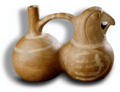

- they work instead by the movement of a liquid between two chambers in the vessel.
|  | |
|
|
From the radiograph, we can see that the two chambers that form the body of this whistling pot, also shaped like a Macaw, are separated by a central 'partition'. This ensures that when the vessel is partly filled with liquid and tipped backwards and forwards, the air pressure changes in the right hand chamber. This causes air to flow past the whistle, and the pot to emit a noise. Some modern whistling pots work in this way.
Whistling Pots: Further Reading
Learn more about Radiography
Investigate
another object?